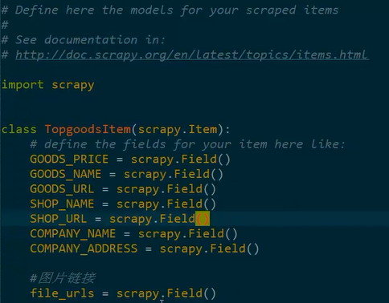
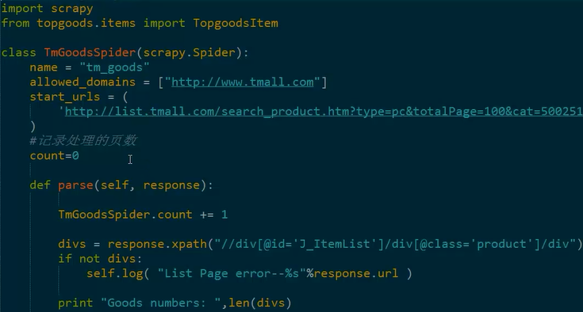
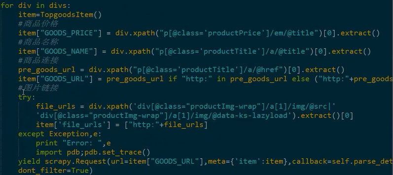
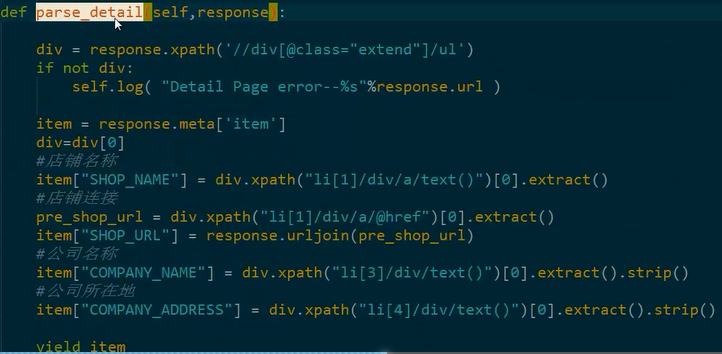
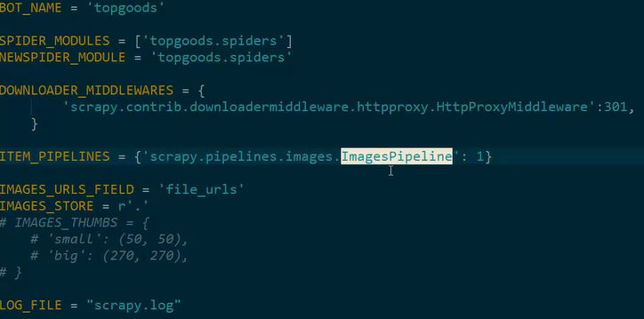
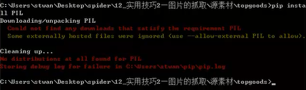
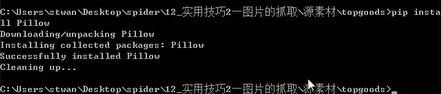
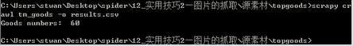

1、目标网站——天猫商城
2、抓取内容——天猫商城销量前60的商品的情况（商品价格、商品名称、商品URL）、店铺的情况（店铺名称、店铺URL、公司名称、公司地址），
以及商品的图片
3、存储格式——图片存储到本地文件夹，数据存储到csv文件中
1、item编写

2、spider编写



3、pipeline编写
4、settings设置

5、运行

从上面的图中我们可以看出，机器没有安装PIL，如何进行PIL的安装？
Using the Images Pipeline
Using the ImagesPipeline is a lot like using the FilesPipeline, except the default field names used are dif-ferent: you use image_urls for the image URLs of an item and it will populate an images field for the information about the downloaded images.
he advantage of using the ImagesPipeline for image files is that you can configure some extra functions like generating thumbnails and filtering the images based on their size.
The Images Pipeline uses Pillow for thumbnailing and normalizing images to JPEG/RGB format, so you need to install this library in order to use it. Python Imaging Library (PIL) should also work in most cases, but it is known to cause troubles in some setups, so we recommend to use Pillow instead of PIL.
安装完毕：

安装完成之后再次执行：

此时打开相应文件夹，可以看到我们爬取的图片：
要求掌握：
怎样在spider的不同parse函数中传递数据
【本文由麦子学院独家原创，转载请注明出处并保留原文链接】